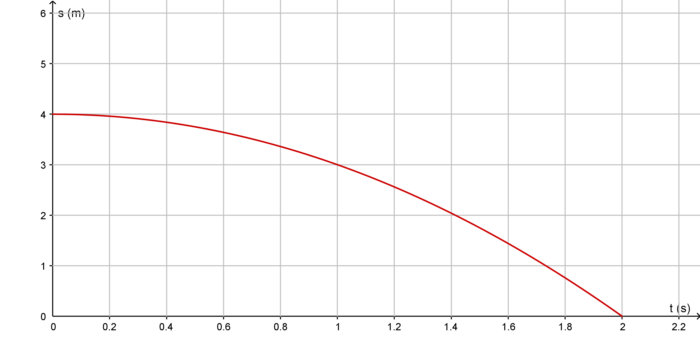

Rettlinjet bevegelse og Newtons lover
Bakgrunn
Før du setter deg ned med de kommende, prøve-lignende oppgavene, kan det være gunstig å ha vært gjennom følgende oppgaver i ERGO Fysikk 1:
Oppgaver fra kapitlene (s. 47–53 og s. 80–85): 1.11, 1.18, 1.20, 1.22, 1.23, 1.25, 1.27, 1.30, 1.37, 1.40
Oppgaver fra oppgavesamlingene: 1.104, 1.105, 1.106, 1.107, 1.111, 1.113, 1.115, 1.117◆, 1.120◆, 1.113◆, 1.134, 1.138◆, B-1.1, B-1.4, B-1.5◆
Andre stikkord:
- enheter
- Dere kommer til å kunne få oppgaver vedrørende enheter. Dette kan være av typen «sett opp symbol og SI-enhet for tre størrelser» og «\(F\) er en kraft, \(v\) er en fart, hvilken SI-enhet må \(b\) ha hvis \(F=v\cdot b\)»?
- grafer
- Jeg kommer til å forvente at dere kan både lese av og tegne vei-, farts- og akselerasjonsgrafer.
- proporsjonale og omvendt proporsjonale størrelser
- Dette er to vesentlige begreper i fysikken. Om to størrelser er proporsjonale, vil en dobling av den ene størrelsen medføre en dobling av den andre. (F.eks. \(s\) og \(t\) om man har konstant \(v\).) Om to størrelser er omvendt proporsjonale, vil en dobling av den ene størrelsen medføre en halvering av den andre. (F.eks. \(v\) og \(t\) om man skal reise en gitt \(s\).)
- overslagsregning
- Dere vil ikke få spesifikke oppgaver knyttet til dette, men det kan være nyttig å gjøre en vurdering av svarene du får ved å bruke verktøy à la det du trenger i oppgave 1.107.
Forberedelsesprøve
Symboler, enheter og størrelser
a) Hva er henholdsvis symbol og SI-enhet for størrelsene fart, masse, tid og posisjon.
b) Hva er en felles forutsetning for de fire bevegelsesformlene?
c) En tenkt fysisk formel viser sammenhengen mellom en fart og masse som \[ v = b\cdot \sqrt{m}, \] hvor \(b\) er en konstant.
Hvilken enhet har konstanten \(b\)?
En sykkeltur
Du er ute og sykler og måler tid og strekning. Totalt sykler du 16 km.
a) Du bruker 30 minutter på de første 9 km. Hva har gjennomsnittsfarten din vært over denne strekningen? Oppgi svaret både i kilometer per timer og meter per sekund.
b) De resterende 7 km sykler du med en fart på 21 km/t. Hva har gjennomsnittsfarten din vært for hele turen? Oppgi svaret i kilometer per time.
Veigrafer
Skisser veggrafene til to gjenstander med samme akselerasjon og startposisjon, men motsatt rettet startfart.
Akselereasjon fra veigraf
Veigrafen under viser bevegelsen til en gjenstand i fritt fall på overflaten av en fremmed planet.

a) Hvilken høyde blir gjenstanden sluppet fra?
b) Hva er tyngdeakselerasjonen ved overflaten av planeten?
c) Hva er farten til gjenstanden idet den treffer bakken?
Strekning og akselerasjon
En gjenstand har farten 20 m/s idet den begynner å bremse med en akselerasjon på 2 m/s2. Hvor langt beveger gjenstanden seg før den har stoppet?